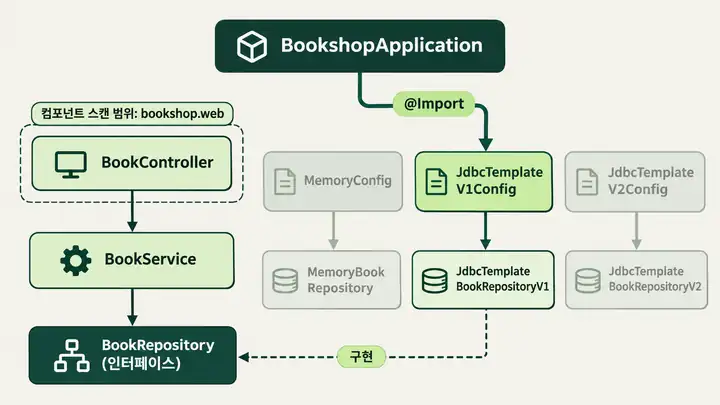
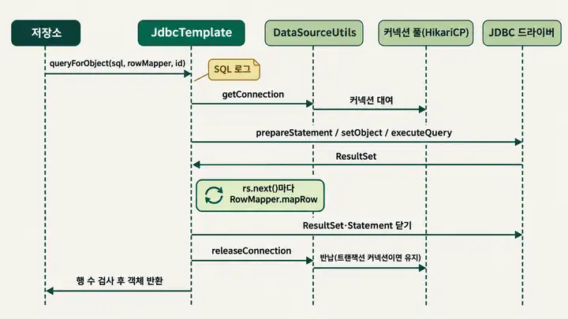
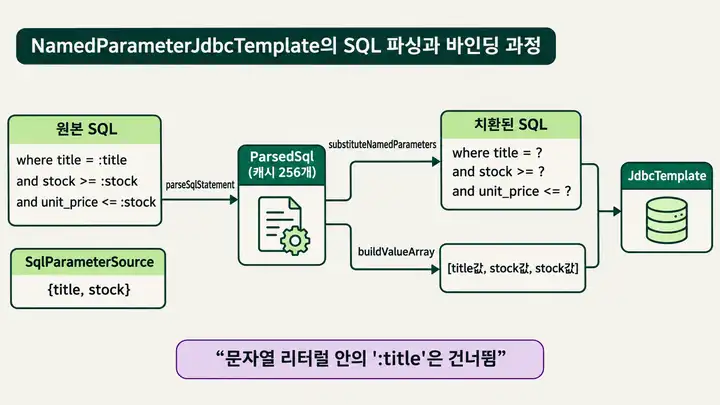
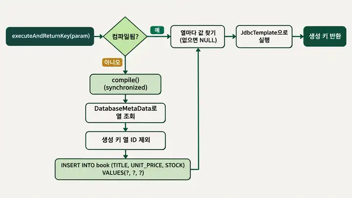

스프링 DB 2편 / 01회
데이터 접근 기술 — 시작과 스프링 JdbcTemplate
구현을 설정 한 줄로 갈아 끼울 수 있는 저장소 구조를 세우고, JdbcTemplate·이름 지정 파라미터·SimpleJdbcInsert가 SQL과 커넥션을 어떻게 다루는지 실행 로그와 소스로 따라간다.
오늘 끝나면 할 수 있는 것
- 저장소 인터페이스와 설정 클래스, @Import, 프로필을 써서 데이터 접근 구현을 코드 수정 없이 바꿔 끼우는 구조를 만들고, 테스트용 application.properties가 메인 설정과 합쳐지지 않고 가려진다는 사실을 클래스패스 순서로 설명할 수 있다.
- 싱글톤 메모리 저장소에서
++sequence와 HashMap이 왜 깨지는지 바이트코드와 실행 결과로 보여 주고, AtomicLong과 ConcurrentHashMap으로 고칠 수 있다. - JdbcTemplate으로 저장·수정·단건 조회·목록 조회를 구현하고, 식별 열이 만든 키를 KeyHolder로 받는 경로와 queryForObject가 0건·2건에서 던지는 예외를 실행 결과로 설명할 수 있다.
- 위치 기반 파라미터의 순서 의존 문제를 이름 지정 파라미터로 없애고,
:name이?로 바뀌는 파싱 규칙과 세 가지 SqlParameterSource, BeanPropertyRowMapper의 열-프로퍼티 대응 규칙을 소스 수준에서 설명할 수 있다. - SimpleJdbcInsert가 테이블 메타데이터로 INSERT 문을 만드는 과정과 값이 없는 열에 NULL을 넣는 함정을 설명하고, JdbcTemplate의 주요 메서드를 용도별로 골라 쓸 수 있다.
핵심 강의 → 핵심 요약 → 실무 재판단 → 적용 연습 → 이해 확인
01 핵심 강의
이 강의의 차례 · 소제목 14개
- 이 회차의 질문: 같은 저장소를 왜 여러 번 다시 만드는가
- 예제 도메인과 메모리 저장소: 공유되는 싱글톤의 상태
- 설정으로 구현을 갈아 끼우기: @Configuration, @Import, 컴포넌트 스캔의 범위
- 테스트 구조: 인터페이스에 대고 쓰는 테스트와 가려지는 설정 파일
- 테이블 만들기: 식별 열과 데이터베이스가 만드는 키
- JdbcTemplate 소개와 설정: 템플릿이 가져가는 것과 남기는 것
- JdbcTemplate 적용 1: 기본 CRUD와 생성 키, 단건 조회의 계약
- JdbcTemplate 적용 2: 동적 쿼리 문제
- JdbcTemplate 적용 3: 구성과 실행, 한 번의 호출이 지나가는 길
- 이름 지정 파라미터 1: 순서에 기대는 바인딩과 NamedParameterJdbcTemplate
- 이름 지정 파라미터 2·3: 값을 넘기는 세 가지 방법과 BeanPropertyRowMapper
- SimpleJdbcInsert: 테이블 메타데이터로 INSERT 문을 만든다
- JdbcTemplate 기능 정리: 무엇을 돌려받고 싶은가로 고른다
- 흔한 오해와 함정, 그리고 다음 회차로
이 회차의 질문: 같은 저장소를 왜 여러 번 다시 만드는가
앞 권에서 우리는 JDBC를 직접 쓰는 코드에서 출발해 DataSource로 커넥션 획득을 추상화하고, 트랜잭션 매니저와 트랜잭션 동기화로 서비스 계층에서 커넥션을 걷어 내고, 체크 예외인 SQLException을 스프링의 DataAccessException 계층으로 바꾸었다. 마지막에는 이 모든 반복을 템플릿 쪽으로 가져가는 JdbcTemplate을 만났다. 이번 권은 그 끝에서 시작한다. 데이터 접근 코드를 어떻게 줄이느냐는 질문은 JdbcTemplate에서 끝나지 않는다. 실무에서는 MyBatis, JPA, 스프링 데이터 JPA, Querydsl 같은 기술을 함께 쓰거나 골라 쓴다.
기술을 비교하는 가장 정직한 방법은 같은 요구 사항을 각 기술로 다시 구현해 보는 것이다. 요구 사항이 바뀌면 코드 차이가 기술 때문인지 요구 사항 때문인지 가릴 수 없다. 실험에서 다른 변수를 고정하고 한 변수만 바꾸는 것과 같은 이유다. 그래서 이 권은 작은 도메인 하나와 그 저장소 인터페이스를 먼저 고정하고, 구현만 바꿔 끼우면서 기술의 차이를 드러낸다. 이 회차는 그 무대를 세우고 첫 번째 구현인 JdbcTemplate을 올린다.
앞으로 만날 기술은 크게 두 갈래로 나뉜다. 하나는 SQL 매퍼(SQL mapper)로, 개발자가 SQL을 직접 쓰고 도구는 파라미터를 바인딩하고 결과 행을 객체로 옮기는 일을 맡는다. JdbcTemplate과 MyBatis가 여기에 속한다. 다른 하나는 ORM(Object-Relational Mapping)으로, 객체와 테이블의 대응을 선언해 두면 도구가 SQL을 만들고 객체의 상태 변화를 추적해 데이터베이스에 반영한다. JPA와 그 구현체인 Hibernate, 그 위에 올린 스프링 데이터 JPA가 이쪽이다.
| 구분 | SQL은 누가 쓰는가 | 개발자가 다루는 단위 | 이 권의 회차 |
|---|---|---|---|
| SQL 매퍼 | 개발자 | SQL 문장, 파라미터, 결과 행 | 01 JdbcTemplate, 03 MyBatis |
| ORM | 도구(개발자는 매핑과 쿼리 언어를 다룸) | 엔티티 객체와 그 상태 | 04 JPA, 05 스프링 데이터 JPA, 06 Querydsl |
회차 구성을 미리 보면 이렇다. 02회는 데이터베이스를 쓰는 테스트에서 테스트끼리 데이터가 섞이는 문제를 트랜잭션 롤백과 임베디드 데이터베이스로 푼다. 03회는 SQL을 XML로 분리하고 동적 SQL을 지원하는 MyBatis와 그 매퍼 인터페이스가 프록시로 구현되는 원리를, 04~06회는 JPA와 스프링 데이터 JPA, Querydsl을 다룬다. 07~09회는 이 모든 기술 아래에 공통으로 깔리는 스프링 트랜잭션과 전파를 깊게 판다. 이 회차는 그 출발점이므로, 앞으로 계속 쓸 구조(인터페이스, 설정, 테스트, 테이블)를 단단히 세우는 데 지면의 절반을 쓴다.
예제 도메인과 메모리 저장소: 공유되는 싱글톤의 상태
예제는 서점의 도서 재고 관리다. 도서는 식별자, 제목, 단가, 재고 수량을 가진다. 요구 사항은 네 가지로 고정한다. 도서를 등록하고, 등록한 도서의 제목·단가·재고를 수정하고, 식별자로 한 권을 찾고, 제목 일부와 최대 단가라는 두 조건으로 목록을 검색한다. 검색 조건은 둘 다 선택 사항이라, 아무 조건 없이 검색하면 전부를, 둘 다 주면 둘을 모두 만족하는 도서만 돌려준다. 이 마지막 요구 사항이 뒤에서 동적 쿼리 문제를 만든다.
package bookshop.domain;
public class Book {
private Long id;
private String title;
private Integer unitPrice;
private Integer stock;
public Book() {} // BeanPropertyRowMapper가 쓰는 기본 생성자
public Book(String title, Integer unitPrice, Integer stock) {
this.title = title;
this.unitPrice = unitPrice;
this.stock = stock;
}
// getId/setId, getTitle/setTitle, getUnitPrice/setUnitPrice, getStock/setStock ...
}package bookshop.repository;
// 각 타입은 실제로는 자기 파일에 둔다
public record BookUpdate(String title, Integer unitPrice, Integer stock) {}
public record BookSearch(String titleKeyword, Integer maxPrice) {}
public interface BookRepository {
Book save(Book book);
void update(Long id, BookUpdate update);
Optional<Book> findById(Long id);
List<Book> findAll(BookSearch search);
}수정용 타입 BookUpdate를 따로 둔 이유는 "수정할 수 있는 것"을 타입으로 못 박기 위해서다. update(Book book)로 받으면 호출하는 쪽이 식별자까지 바꾼 객체를 넘길 수 있고, 저장소는 어떤 필드가 수정 대상인지 알 길이 없다. 식별자는 메서드 인수로 따로 받고, 바꿀 수 있는 세 필드만 담은 값 객체를 받으면 계약이 시그니처에 드러난다. 검색 조건도 같은 이유로 BookSearch라는 값 객체로 묶었다. 조건이 늘어나도 메서드 시그니처는 바뀌지 않는다. 두 타입은 바뀌지 않는 값을 담기만 하므로 Java 16부터 정식 기능이 된 레코드(record)로 썼다. findById가 Optional을 돌려주는 것은 "없을 수 있음"을 반환 타입으로 표현해 호출하는 쪽이 null 검사를 잊지 못하게 하려는 것이다.
이제 첫 구현인 메모리 저장소를 만든다. 데이터베이스 없이 애플리케이션 전체를 돌려 볼 수 있게 해 주고, 뒤에서 만들 데이터베이스 구현들과 같은 테스트를 통과해야 하는 기준점 역할도 한다.
package bookshop.repository.memory;
public class MemoryBookRepository implements BookRepository {
private final Map<Long, Book> store = new ConcurrentHashMap<>();
private final AtomicLong sequence = new AtomicLong();
@Override
public Book save(Book book) {
book.setId(sequence.incrementAndGet());
store.put(book.getId(), book);
return book;
}
@Override
public void update(Long id, BookUpdate update) {
Book found = findById(id).orElseThrow();
found.setTitle(update.title());
found.setUnitPrice(update.unitPrice());
found.setStock(update.stock());
}
@Override
public Optional<Book> findById(Long id) {
return Optional.ofNullable(store.get(id));
}
@Override
public List<Book> findAll(BookSearch search) {
String keyword = search.titleKeyword();
Integer maxPrice = search.maxPrice();
return store.values().stream()
.filter(b -> keyword == null || keyword.isBlank() || b.getTitle().contains(keyword))
.filter(b -> maxPrice == null || b.getUnitPrice() <= maxPrice)
.toList();
}
public void clearStore() { // 테스트에서 저장소를 비우는 용도
store.clear();
}
}왜 HashMap과 long 필드가 아니라 ConcurrentHashMap과 AtomicLong을 썼을까. 이 객체는 스프링 빈으로 등록되어 컨테이너 안에 하나만 존재한다. 스프링 MVC 권에서 보았듯이 서블릿 컨테이너는 요청마다 스레드 풀의 스레드 하나를 배정하고, 그 스레드들이 같은 컨트롤러, 같은 서비스, 같은 저장소 인스턴스를 동시에 호출한다. 메서드의 지역 변수는 스레드마다 자기 스택 프레임에 따로 생기지만, 인스턴스 필드는 힙에 있는 객체 하나에 붙어 있어 모든 스레드가 같은 메모리를 읽고 쓴다. 싱글톤 저장소의 store와 sequence가 바로 그 공유 상태다.
평범한 long 필드에 ++sequence를 쓰면 무엇이 문제인지 바이트코드로 확인해 보자. 다음은 static long next() { return ++sequence; }를 JDK 21의 javac로 컴파일하고 javap -c로 본 결과다.
static long next();
Code:
0: getstatic #7 // Field sequence:J
3: lconst_1
4: ladd
5: dup2
6: putstatic #7 // Field sequence:J
9: lreturn소스 코드의 한 줄이 "필드 값을 읽는다(getstatic) → 1을 더한다(ladd) → 결과를 필드에 쓴다(putstatic)"라는 세 단계로 나뉜다. 두 스레드가 같은 값 41을 읽고 각자 42를 계산해 써 넣으면 두 번 증가했는데 값은 한 번만 오른다. 두 스레드가 같은 식별자 42를 받아 서로 다른 도서를 같은 키로 저장하면 먼저 저장한 도서는 덮어써져 사라진다. 게다가 long은 64비트라서 JLS §17.7은 volatile이 아닌 long과 double의 쓰기가 32비트씩 두 번으로 나뉘어 처리될 수 있다고 허용한다. 64비트 HotSpot에서 이 찢어진 쓰기를 보기는 어렵지만, 명세는 원자성을 약속하지 않는다.
실제로 돌려 보았다. 스레드 8개가 각자 10만 번씩 평범한 long 필드를 증가시켜 그 값을 키로 HashMap에 넣고, 같은 일을 AtomicLong과 ConcurrentHashMap으로도 하게 했다(JDK 21.0.13, Apple Silicon 맥). 첫 실행의 결과는 다음과 같았다. 기댓값 800,000에 대해 평범한 필드는 657,636, 해시 맵의 크기는 619,913이었고 원자적 버전은 둘 다 정확히 800,000이었다. 이 숫자는 실행마다 다르다. 같은 프로그램을 다시 실행했을 때는 결과를 출력하지 못한 채 2분 넘게 끝나지 않아 강제로 종료해야 했다. HashMap의 Javadoc은 여러 스레드가 동시에 접근하고 그중 하나라도 구조를 바꾸면 외부에서 동기화해야 한다고 적고 있다. 그 조건을 어기면 결과가 틀리는 정도가 아니라 어떤 동작도 보장되지 않는다.
AtomicLong.incrementAndGet()은 읽기-수정-쓰기를 하나의 원자적 연산으로 처리한다. HotSpot에서는 CPU의 원자적 명령(비교 후 교환, CAS 또는 원자적 덧셈)을 쓰기 때문에 락 없이도 두 스레드가 같은 값을 받는 일이 없다. ConcurrentHashMap은 여러 스레드가 동시에 읽고 쓰도록 설계된 맵이다. 다만 개별 연산이 안전하다고 해서 여러 연산을 묶은 동작까지 안전한 것은 아니다. 위 update는 "찾고, 세 필드를 차례로 바꾸는" 여러 단계라서, 두 스레드가 같은 도서를 동시에 수정하면 한 스레드의 제목과 다른 스레드의 단가가 섞인 상태가 잠깐이나마 보일 수 있다. 메모리 저장소는 예제와 테스트용이므로 여기까지만 막는다. 데이터베이스는 이 문제를 행 락과 트랜잭션 격리로 다룬다.
설정으로 구현을 갈아 끼우기: @Configuration, @Import, 컴포넌트 스캔의 범위
저장소 구현을 바꿀 때 서비스나 컨트롤러 코드를 고치지 않으려면 두 가지가 필요하다. 하나는 서비스가 구체 클래스가 아니라 BookRepository 인터페이스에 의존하는 것이고, 이것은 이미 했다. 다른 하나는 "어떤 구현을 빈으로 등록할지"를 코드 바깥의 한 지점에서 결정하는 것이다. 구현 클래스에 @Repository를 붙여 컴포넌트 스캔으로 등록하면, 구현을 바꿀 때마다 한쪽 클래스의 애너테이션을 떼고 다른 쪽에 붙여야 한다. 대신 구현 클래스에는 애너테이션을 붙이지 않고, 구현마다 설정 클래스를 하나씩 만들어 @Bean으로 등록한다.
package bookshop.config;
@Configuration
public class MemoryConfig {
@Bean
public BookRepository bookRepository() {
return new MemoryBookRepository();
}
@Bean
public BookService bookService(BookRepository bookRepository) {
return new BookService(bookRepository);
}
}package bookshop;
@Import(MemoryConfig.class) // 이 한 줄이 구현을 고른다
@SpringBootApplication(scanBasePackages = "bookshop.web")
public class BookshopApplication {
public static void main(String[] args) {
SpringApplication.run(BookshopApplication.class, args);
}
}@SpringBootApplication은 @ComponentScan을 포함하고, 기본 스캔 범위는 이 클래스가 있는 패키지와 그 하위 패키지다. 위 클래스는 bookshop 패키지에 있으므로, 기본값 그대로라면 bookshop.config에 있는 모든 @Configuration 클래스가 스캔된다. @Configuration 자체가 @Component를 메타 애너테이션으로 가진 스캔 대상이기 때문이다. 나중에 JdbcTemplateV1Config, JdbcTemplateV2Config 같은 설정이 늘어나면 그것들이 모두 등록되어 BookRepository 빈이 여러 개가 된다. 빈 이름이 다르면 서비스에 주입하는 순간 후보가 둘 이상이라는 NoUniqueBeanDefinitionException이 나고, 이름이 같으면 스프링 부트가 기본으로 빈 정의 덮어쓰기를 금지하므로 시작 단계에서 실패한다. 그래서 스캔 범위를 컨트롤러가 있는 bookshop.web으로 좁히고, 설정은 @Import로 명시적으로 하나만 가져온다.
@Import는 지정한 설정 클래스를 컴포넌트 스캔과 상관없이 빈 정의로 읽어 들인다. 컨테이너가 시작될 때 설정 클래스를 파싱하는 단계(ConfigurationClassPostProcessor)에서 @Import를 따라가 그 안의 @Bean 메서드들을 빈 정의로 등록하고, 이후 일반 빈과 똑같이 생성한다. 구현을 JdbcTemplate으로 바꾸고 싶으면 @Import(MemoryConfig.class)를 @Import(JdbcTemplateV1Config.class)로 바꾸기만 하면 된다. 서비스, 컨트롤러, 테스트 코드는 한 글자도 바뀌지 않는다. 스프링 핵심 원리 권에서 다룬 "설정과 사용의 분리"가 실제로 이런 모습으로 쓰인다.

프로필: 환경마다 다른 빈을 켜고 끈다
애플리케이션을 띄우자마자 화면에서 확인할 도서가 몇 권 있으면 편하다. 그런데 이 초기 데이터는 로컬에서 직접 실행할 때만 필요하고, 테스트에서는 오히려 방해가 된다. 테스트는 비어 있는 저장소에서 자기가 넣은 데이터만 보고 결과를 검증해야 하기 때문이다. 이렇게 "어떤 환경에서만 등록할 빈"을 표현하는 것이 프로필(profile)이다.
public class SampleDataLoader {
private final BookRepository repository;
public SampleDataLoader(BookRepository repository) {
this.repository = repository;
}
@EventListener(ApplicationReadyEvent.class)
public void load() {
repository.save(new Book("자바 기초", 20000, 5));
repository.save(new Book("스프링 입문", 25000, 7));
}
}
// 애플리케이션 클래스(또는 설정 클래스)에 추가
@Bean
@Profile("local")
public SampleDataLoader sampleDataLoader(BookRepository bookRepository) {
return new SampleDataLoader(bookRepository);
}@Profile("local")이 붙은 빈은 활성 프로필에 local이 있을 때만 등록된다. 활성 프로필은 spring.profiles.active 속성으로 정한다. 메인 쪽 src/main/resources/application.properties에 spring.profiles.active=local을 두면 직접 실행할 때 이 빈이 켜진다. 아무 프로필도 지정하지 않으면 스프링은 default라는 이름의 기본 프로필로 동작한다. 스프링 부트는 시작할 때 이 상태를 로그로 남기는데, Spring Boot 3.5의 SpringApplication 소스를 보면 프로필이 없을 때는 No active profile set, falling back to 1 default profile: "default", 하나가 켜져 있을 때는 The following 1 profile is active: "local" 형태의 메시지를 만든다. 테스트가 이상하게 초기 데이터를 보고 있다면 이 한 줄부터 확인하자.
초기 데이터를 넣는 시점으로 ApplicationReadyEvent를 고른 데도 이유가 있다. 스프링 부트 레퍼런스는 애플리케이션이 시작될 때 이벤트가 나가는 순서를 정해 두었다. 컨텍스트 리프레시가 끝나면 ApplicationStartedEvent가 나가고, 그다음 ApplicationRunner와 CommandLineRunner가 호출되며, 그 뒤에 ApplicationReadyEvent가 나간다. 즉 이 이벤트를 받는 시점에는 모든 싱글톤 빈의 생성과 초기화, AOP 프록시 적용이 끝나 있다. 반대로 빈의 생성자나 @PostConstruct에서 데이터를 넣으면, 다른 빈이 아직 완전히 준비되지 않았거나 트랜잭션 프록시가 적용되기 전일 수 있다. 이 초기화 시점 문제는 07회에서 트랜잭션 AOP와 함께 정확히 다룬다.
테스트 구조: 인터페이스에 대고 쓰는 테스트와 가려지는 설정 파일
구현을 바꿔 끼울 수 있다는 구조의 진짜 이득은 테스트에서 나온다. 테스트를 BookRepository 인터페이스에 대고 쓰면, 같은 테스트 코드로 메모리 구현과 JdbcTemplate 구현, 나중의 MyBatis·JPA 구현을 모두 검증할 수 있다. 구현마다 테스트를 새로 쓰지 않아도 되고, 모든 구현이 같은 계약을 지킨다는 것을 같은 기준으로 확인할 수 있다.
@SpringBootTest
class BookRepositoryTest {
@Autowired
BookRepository repository;
@AfterEach
void afterEach() {
if (repository instanceof MemoryBookRepository memory) {
memory.clearStore(); // 메모리 구현일 때만 직접 비운다
}
}
@Test
void saveAndFind() {
Book saved = repository.save(new Book("자바 기초", 20000, 5));
Book found = repository.findById(saved.getId()).orElseThrow();
assertThat(found.getTitle()).isEqualTo("자바 기초");
}
@Test
void findByConditions() {
repository.save(new Book("자바 기초", 20000, 5));
repository.save(new Book("스프링 입문", 25000, 7));
assertThat(repository.findAll(new BookSearch(null, null))).hasSize(2);
assertThat(repository.findAll(new BookSearch("스프링", null))).hasSize(1);
assertThat(repository.findAll(new BookSearch(null, 20000))).hasSize(1);
assertThat(repository.findAll(new BookSearch("스프링", 20000))).isEmpty();
}
}@SpringBootTest는 어떤 설정으로 컨텍스트를 만들까. 별도 지정이 없으면 테스트 클래스의 패키지에서 위쪽 패키지로 올라가며 @SpringBootConfiguration(을 포함한 @SpringBootApplication)이 붙은 클래스를 찾고, 그것을 설정의 시작점으로 쓴다. 그래서 애플리케이션 클래스의 @Import가 테스트에도 그대로 적용되고, 애플리케이션이 쓰는 구현이 곧 테스트되는 구현이 된다. @Import 한 줄을 바꾸면 같은 테스트가 다른 구현을 검증한다.
테스트에서는 local 프로필의 초기 데이터가 들어오면 안 된다. 그래서 src/test/resources/application.properties를 만들고 spring.profiles.active=test를 넣는다. 여기서 많은 사람이 오해하는 점이 있다. 테스트 쪽 파일은 메인 쪽 파일에 덧붙는 것이 아니라 메인 쪽 파일을 가린다. 직접 확인해 보았다. 디렉터리 두 개에 각각 application.properties를 두고, 메인 쪽 파일에는 app.mode=main과 app.only-main=yes를, 테스트 쪽 파일에는 app.mode=test만 넣은 뒤 스프링 부트 애플리케이션(Spring Boot 4.1.2)을 띄워 두 속성을 출력했다.
--- 클래스패스: test 디렉터리, main 디렉터리 순
app.mode=test
app.only-main=null
--- 클래스패스: main 디렉터리, test 디렉터리 순
app.mode=main
app.only-main=yes테스트 쪽이 앞에 있을 때 app.only-main이 null이다. 메인 쪽 파일은 아예 읽히지 않았다는 뜻이다. 스프링 부트가 설정 파일을 찾는 기본 위치 가운데 하나가 classpath:/이고(그 밖에 classpath:/config/와 현재 디렉터리 쪽 위치들이 있다), classpath: 위치의 자원은 클래스 로더의 getResource로 찾는다. 이 메서드는 클래스패스를 앞에서부터 뒤져 처음 찾은 하나만 돌려준다. 그리고 Gradle에서 test 소스 세트의 runtimeClasspath는 자기 출력(build/classes/java/test, build/resources/test)을 맨 앞에 두고 그 뒤에 의존성을 붙이므로, 테스트를 실행하면 테스트 쪽 파일이 먼저 발견된다. 결론은 단순하다. 테스트용 파일에는 테스트에 필요한 설정을 빠짐없이 다시 적어야 한다. 데이터베이스 URL을 빠뜨리면 테스트는 메인 설정의 URL을 쓰지 않는다.
메모리 저장소는 clearStore()로 테스트마다 비울 수 있었다. 저장소가 실제 데이터베이스로 바뀌면 사정이 달라진다. 테스트가 넣은 행은 테스트가 끝나도 남아서 다음 테스트의 findAll 결과에 섞여 들고, 로컬에서 직접 넣어 둔 데이터와도 섞인다. 위 findByConditions는 데이터베이스 구현에서 두 번째 실행부터 실패한다. 이 데이터 격리 문제를 트랜잭션 롤백과 임베디드 데이터베이스로 푸는 것이 02회의 주제다.
테이블 만들기: 식별 열과 데이터베이스가 만드는 키
JdbcTemplate 구현으로 넘어가기 전에 테이블을 만든다. H2 데이터베이스 기준 DDL은 다음과 같다. MySQL이라면 식별자 열을 id bigint not null auto_increment로 쓰면 같은 역할을 한다.
drop table if exists book cascade;
create table book (
id bigint generated by default as identity,
title varchar(100) not null,
unit_price integer,
stock integer,
primary key (id)
);generated by default as identity는 이 열을 식별 열(identity column)로 만든다. INSERT 문에서 이 열의 값을 빼면 데이터베이스가 내부 시퀀스에서 다음 값을 꺼내 채운다. 메모리 저장소에서 AtomicLong이 하던 일을 데이터베이스가 맡는 셈이다. 여기서 애플리케이션 쪽에 문제가 하나 생긴다. 키를 데이터베이스가 만들기 때문에, INSERT를 실행하기 전에는 애플리케이션이 새 도서의 식별자를 알 수 없다. save는 식별자가 채워진 객체를 돌려줘야 하므로, INSERT 직후 데이터베이스가 만든 키를 받아 와야 한다.
JDBC는 이를 위해 생성 키(generated keys) 조회를 제공한다. 문장을 준비할 때 con.prepareStatement(sql, Statement.RETURN_GENERATED_KEYS)나 con.prepareStatement(sql, new String[]{"id"})처럼 "이 문장이 만든 키를 돌려 달라"고 알리고, 실행 후 getGeneratedKeys()로 키를 담은 ResultSet을 받는다. 열 이름 배열을 넘기는 방식은 돌려받을 열을 명시하므로, 드라이버가 어떤 열을 키로 볼지 추측할 필요가 없다. 바로 뒤에서 볼 JdbcTemplate의 KeyHolder가 이 ResultSet을 읽어 담는 그릇이다.
식별 열에는 알아 둘 함정이 있다. by default는 "값을 주지 않으면 만들어 준다"는 뜻이라 INSERT에서 식별자를 직접 넣는 것도 허용한다. 그런데 직접 넣은 값은 내부 시퀀스를 움직이지 않는다. H2 2.4.240에서 빈 테이블에 insert into book (id, title) values (2, 'explicit')를 먼저 실행하고 식별자 없이 두 번 INSERT 해 보았다.
generated=1
ERR 23505 Unique index or primary key violation: "PUBLIC.CONSTRAINT_1 PRIMARY KEY ON PUBLIC.BOOK(ID) ( /* key:2 */ CAST(2 AS BIGINT), 'explicit', NULL, NULL)"; SQL statement:첫 번째 자동 생성 값은 1이라 문제가 없었지만, 두 번째로 생성된 값 2가 직접 넣은 행과 부딪혀 기본 키 위반(SQLState 23505)이 났다. 테스트 데이터나 마이그레이션 스크립트에서 식별자를 직접 넣은 뒤 애플리케이션이 자동 생성에 기대면 이런 충돌이 나중에, 그것도 데이터가 몇 건 쌓인 뒤에야 터진다. 반대로 generated always as identity로 만든 열에 값을 직접 넣으면 H2는 Generated column "PUBLIC.BOOK2.ID" cannot be assigned(오류 코드 90154)로 즉시 거부한다. 그리고 title을 빼고 INSERT 하면 not null 제약 때문에 SQLState 23502로 실패한다. 이런 SQLState들이 앞 권에서 본 예외 변환기를 거쳐 DuplicateKeyException, DataIntegrityViolationException 같은 스프링 예외가 된다.
MySQL의 auto_increment는 이 함정에서 H2와 다르게 움직인다. MySQL 8.4.13과 8.0.46에서 id bigint not null auto_increment로 만든 같은 테이블에 같은 순서로 실행해 보았다.
insert into book (id, title) values (2, 'explicit');
insert into book (title) values ('a'); -- last_insert_id() = 3
insert into book (title) values ('b'); -- last_insert_id() = 4
+----+----------+
| id | title |
+----+----------+
| 2 | explicit |
| 3 | a |
| 4 | b |
+----+----------+직접 넣은 2가 카운터를 밀어 올려 다음 자동 생성 값이 3이 되었고, 충돌은 나지 않았다. 그래서 H2에서 개발하고 MySQL에서 운영하면 이 버그가 개발 환경에서만 드러난다. 같은 식별자를 다시 직접 넣으면 ERROR 1062 (23000): Duplicate entry '2' for key 'book.PRIMARY'가 나고, title을 빼고 INSERT 하면 ERROR 1364 (HY000): Field 'title' doesn't have a default value로 실패했다(기본 sql_mode에 STRICT_TRANS_TABLES가 들어 있는 상태). 같은 위반이라도 데이터베이스마다 오류 코드와 SQLState가 다르다는 점도 함께 보아 두자.
JdbcTemplate 소개와 설정: 템플릿이 가져가는 것과 남기는 것
앞 권 마지막 회차에서 JdbcTemplate의 정체를 보았다. JDBC 코드는 매번 "커넥션 얻기 → 문장 준비 → 파라미터 바인딩 → 실행 → 결과 읽기 → 예외 변환 → 자원 닫기"를 반복하고, 이 중 문제마다 달라지는 것은 SQL과 파라미터, 결과를 객체로 옮기는 방법뿐이다. 템플릿 콜백 패턴은 변하지 않는 흐름을 템플릿 메서드에 두고, 변하는 부분만 콜백(람다)으로 받는다. 정리하면 JdbcTemplate이 가져가는 일과 우리에게 남기는 일은 다음과 같다.
| JdbcTemplate이 맡는 일 | 개발자에게 남는 일 |
|---|---|
| DataSource에서 커넥션 획득(트랜잭션에 묶인 커넥션이 있으면 그것을 사용) | SQL 작성 |
| PreparedStatement 생성과 문장 설정(fetchSize, maxRows, queryTimeout) | 파라미터 값 전달 |
| 실행, ResultSet 순회 | 한 행을 객체로 바꾸는 방법(RowMapper) |
| SQLException을 DataAccessException으로 변환 | 변환된 예외 중 복구할 것을 골라 처리 |
| ResultSet, Statement 닫기와 커넥션 반납 | (없음) |
설정은 간단하다. 스프링 부트 프로젝트라면 build.gradle에 JDBC 스타터와 데이터베이스 드라이버를 추가한다.
dependencies {
implementation 'org.springframework.boot:spring-boot-starter-jdbc'
runtimeOnly 'com.h2database:h2'
// ...
}스프링 부트 레퍼런스에 따르면 spring-boot-starter-jdbc나 spring-boot-starter-data-jpa를 쓰면 HikariCP 커넥션 풀 의존성이 자동으로 따라오고, 부트는 HikariCP가 있으면 항상 그것을 고른다. 그리고 JdbcTemplate과 NamedParameterJdbcTemplate은 자동 구성되므로 빈으로 바로 주입받을 수 있고, spring.jdbc.template.max-rows=500 같은 spring.jdbc.template.* 속성으로 일부 설정을 바꿀 수 있다. 이 회차에서는 원리를 드러내기 위해 자동 구성된 템플릿을 주입받지 않고 DataSource만 받아 저장소 안에서 직접 만든다. 이 방식은 스프링 프레임워크 레퍼런스가 "흔한 관행"이라고 소개하는 방식, 즉 공유된 DataSource 빈을 주입받아 생성자나 setter에서 JdbcTemplate을 만드는 방식이다.
저장소가 싱글톤이니 그 안의 JdbcTemplate도 여러 스레드가 동시에 쓴다. 앞에서 공유 상태가 위험하다고 했는데 괜찮을까. 레퍼런스는 "JdbcTemplate 인스턴스는 일단 구성되고 나면 스레드 안전하다"고 명시한다. 이유는 구조에 있다. JdbcTemplate의 필드는 DataSource, 예외 변환기, fetchSize 같은 설정값뿐이고, 구성이 끝난 뒤에는 바뀌지 않는다. 호출마다 달라지는 커넥션, 문장, 결과 집합은 모두 메서드의 지역 변수로 각 스레드의 스택에만 존재한다. 공유되는 것은 바뀌지 않는 설정이고, 바뀌는 것은 공유되지 않는다. 앞의 메모리 저장소 문제와 정확히 반대되는 구조다. 따라서 저장소마다 템플릿을 하나 만들어 두고 계속 쓰면 되고, 호출할 때마다 새로 만들 필요가 없다.
템플릿 메서드의 뼈대를 단순화해서 보면 다음과 같다. 실제 소스(JdbcTemplate.execute(PreparedStatementCreator, PreparedStatementCallback, boolean))는 로그, 경고 처리, 파라미터 정리를 더 하지만 흐름은 같다.
// 단순화한 흐름 (실제 소스가 아니다)
<T> T execute(PreparedStatementCreator psc, PreparedStatementCallback<T> action) {
Connection con = DataSourceUtils.getConnection(dataSource); // 트랜잭션 커넥션이 있으면 그것
PreparedStatement ps = null;
try {
ps = psc.createPreparedStatement(con); // 콜백 1: 문장 만들기
applyStatementSettings(ps); // fetchSize, maxRows, queryTimeout
return action.doInPreparedStatement(ps); // 콜백 2: 실행하고 결과 처리
} catch (SQLException ex) {
JdbcUtils.closeStatement(ps); ps = null;
DataSourceUtils.releaseConnection(con, dataSource); con = null; // 먼저 반납
throw translateException("PreparedStatementCallback", sql, ex); // 그다음 변환
} finally {
JdbcUtils.closeStatement(ps);
DataSourceUtils.releaseConnection(con, dataSource); // 트랜잭션 커넥션이면 닫지 않는다
}
}눈여겨볼 곳은 catch 블록이다. 예외를 변환하기 전에 문장을 닫고 커넥션을 먼저 반납한다. 실제 소스의 주석은 예외 변환기가 아직 초기화되지 않은 경우에 생길 수 있는 커넥션 풀 교착(deadlock)을 피하려고 커넥션을 일찍 반납한다고 적고 있다. 풀의 커넥션을 모두 쥔 채로 또 다른 작업을 기다리는 상황을 만들지 않겠다는 뜻이다. 그리고 releaseConnection은 커넥션을 무조건 닫지 않는다. 현재 스레드의 트랜잭션에 묶인 커넥션이라면 그대로 두고, 그렇지 않을 때만 닫는다(풀이라면 반납). 앞 권에서 본 트랜잭션 동기화가 바로 이 지점에서 JdbcTemplate과 맞물린다.
JdbcTemplate 적용 1: 기본 CRUD와 생성 키, 단건 조회의 계약
이제 첫 번째 데이터베이스 구현을 만든다. 검색(findAll)은 다음 절에서 따로 다루고, 여기서는 나머지 세 메서드와 행 매퍼를 본다.
package bookshop.repository.jdbctemplate;
public class JdbcTemplateBookRepositoryV1 implements BookRepository {
private final JdbcTemplate template;
public JdbcTemplateBookRepositoryV1(DataSource dataSource) {
this.template = new JdbcTemplate(dataSource);
}
@Override
public Book save(Book book) {
String sql = "insert into book (title, unit_price, stock) values (?, ?, ?)";
KeyHolder keyHolder = new GeneratedKeyHolder();
template.update(con -> {
PreparedStatement ps = con.prepareStatement(sql, new String[]{"id"});
ps.setString(1, book.getTitle());
ps.setObject(2, book.getUnitPrice()); // null일 수 있으므로 setObject
ps.setObject(3, book.getStock());
return ps;
}, keyHolder);
book.setId(keyHolder.getKey().longValue());
return book;
}
@Override
public void update(Long id, BookUpdate update) {
String sql = "update book set title = ?, unit_price = ?, stock = ? where id = ?";
template.update(sql, update.title(), update.unitPrice(), update.stock(), id);
}
@Override
public Optional<Book> findById(Long id) {
String sql = "select id, title, unit_price, stock from book where id = ?";
try {
Book book = template.queryForObject(sql, bookRowMapper(), id);
return Optional.of(book);
} catch (EmptyResultDataAccessException e) {
return Optional.empty();
}
}
private RowMapper<Book> bookRowMapper() {
return (rs, rowNum) -> {
Book book = new Book();
book.setId(rs.getLong("id"));
book.setTitle(rs.getString("title"));
book.setUnitPrice(rs.getObject("unit_price", Integer.class));
book.setStock(rs.getObject("stock", Integer.class));
return book;
};
}
// findAll은 다음 절에서
}save: 키를 받아 오는 길
save는 update(PreparedStatementCreator, KeyHolder)를 쓴다. 단순한 update(sql, args...)는 키를 돌려받는 방법이 없기 때문이다. 넘긴 람다가 PreparedStatementCreator 콜백이고, 템플릿이 얻어 온 커넥션을 받아 문장을 만든다. 이때 new String[]{"id"}로 생성 키 열을 지정했다. 템플릿은 문장을 실행한 뒤 getGeneratedKeys()의 결과 집합을 읽어 KeyHolder에 열 이름과 값의 맵으로 담는다. H2 2.4.240과 Spring Framework 7.0.10으로 실행해 키를 출력해 보면 다음과 같다.
key=1 type=java.lang.Long
keys={ID=1}getKey()는 Number를 돌려주고 실제 타입은 드라이버가 정한다. 여기서는 BIGINT 열이라 Long이었다. 그래서 longValue()로 꺼낸다. getKeys()에서 열 이름이 대문자 ID인 것은 H2가 따옴표 없는 식별자를 대문자로 저장하기 때문이다. getKey()는 키가 정확히 하나일 때만 쓸 수 있다. 소스를 보면 키 맵에 값이 둘 이상이면 "The getKey method should only be used when a single key is returned"라는 메시지로 InvalidDataAccessApiUsageException을 던진다. 열 이름을 지정하지 않고 RETURN_GENERATED_KEYS만 요청하면 드라이버에 따라 키가 아닌 열까지 돌려줄 수 있어 이 예외를 만나게 된다. 열 이름 배열을 넘긴 이유다.
람다 안에서 setInt 대신 setObject를 쓴 것도 이유가 있다. setInt(int, int)의 두 번째 매개변수는 기본형 int다. book.getUnitPrice()가 Integer null을 돌려주면, 인수로 넘기기 위해 언박싱(unboxing)이 일어나고 JLS §5.1.8에 따라 NullPointerException이 난다. 이 예외는 SQLException이 아니므로 예외 변환기를 거치지 않고 그대로 올라간다. 템플릿의 finally 블록 덕분에 커넥션은 반납되지만, 호출한 쪽은 데이터 접근 예외가 아닌 NPE를 받는다. 조회 쪽의 rs.getInt("unit_price")도 같은 함정이 있다. 값이 SQL NULL이면 0을 돌려주므로 "단가 0원"과 "단가 미정"을 구분할 수 없다. 그래서 rs.getObject(열, Integer.class)로 읽었다. 덧붙여 PreparedStatement.setObject(int, Object)의 Javadoc은 타입 정보 없는 NULL을 받지 못하는 데이터베이스도 있으니 이식성이 중요하면 setNull이나 SQL 타입을 함께 넘기는 setObject를 쓰라고 적고 있다. 예제의 H2는 문제없이 받지만, 문자열 SQL과 인수를 넘기는 update(sql, args...)를 쓰면 스프링의 StatementCreatorUtils가 null 인수를 setNull로 바인딩해 이 차이를 대신 처리해 준다.
update: 영향받은 행 수
update(sql, args...)는 가변 인수를 순서대로 ?에 바인딩하고 executeUpdate()를 실행해, 영향받은 행 수를 int로 돌려준다. INSERT, UPDATE, DELETE 모두 이 메서드를 쓴다. 위 코드는 반환값을 버렸지만, 존재하지 않는 식별자로 수정을 요청하면 0이 돌아온다. 예외가 나지 않으므로, 수정 대상이 반드시 있어야 하는 업무라면 반환값이 1인지 확인하는 것이 저장소의 계약을 지키는 방법이다. 메모리 구현의 update가 orElseThrow()로 예외를 던졌다는 점과 비교하면, 같은 인터페이스의 두 구현이 "대상 없음"에서 다르게 동작하고 있다. 이런 차이를 인터페이스 문서에 적어 두고 테스트로 고정해야 구현을 바꿔 끼워도 동작이 바뀌지 않는다.
findById: queryForObject는 "정확히 한 행"을 요구한다
queryForObject(sql, rowMapper, args...)는 결과가 정확히 한 행이라고 가정하는 메서드다. 0건과 2건 이상을 직접 실행해 보았다.
org.springframework.dao.EmptyResultDataAccessException: Incorrect result size: expected 1, actual 0
org.springframework.dao.IncorrectResultSizeDataAccessException: Incorrect result size: expected 1, actual 20건이면 EmptyResultDataAccessException, 2건 이상이면 IncorrectResultSizeDataAccessException이다. javap로 보면 앞의 것은 뒤의 것의 하위 클래스다. "없음"은 단건 조회에서 정상적인 결과일 수 있으므로, 위 코드는 앞의 예외만 잡아 Optional.empty()로 바꾸고 2건 이상은 그대로 올려 보낸다. 기본 키로 찾는데 두 행이 나왔다면 데이터나 쿼리가 잘못된 것이니 감출 이유가 없다.
소스를 따라가면 이 메서드가 어떻게 행 수를 아는지 보인다. queryForObject는 내부에서 query(sql, pss, new RowMapperResultSetExtractor<>(rowMapper, 1))로 목록을 만든 뒤 DataAccessUtils.nullableSingleResult(results)로 크기를 검사한다. 여기서 숫자 1은 "한 행만 읽으라"는 뜻이 아니라 결과 리스트의 초기 용량일 뿐이다. 추출기는 while (rs.next())로 끝까지 돌며 모든 행에 RowMapper를 적용한다. 즉 조건을 잘못 써서 만 건이 나오는 쿼리라면 만 개의 객체를 다 만든 뒤에야 "actual 10000"으로 실패한다. 실행 결과의 "actual 2"도 두 번째 행까지 실제로 매핑했다는 뜻이다. 결과가 여러 건일 수 있는 조회라면 처음부터 query로 리스트를 받고, 첫 행만 필요하면 SQL에서 행 수를 제한하는 것이 맞다.
RowMapper는 행 하나를 객체 하나로 바꾸는 콜백이다. 결과 집합(ResultSet)은 커서(cursor)를 가진 객체로, 처음에는 첫 행의 앞을 가리킨다. 추출기가 rs.next()를 부를 때마다 커서가 한 행씩 내려가고, 그 상태에서 mapRow(rs, rowNum)를 호출한다. 그러므로 RowMapper 안에서는 rs.next()를 부르면 안 된다. 커서를 움직이는 일은 템플릿의 몫이고, RowMapper는 현재 행의 열 값만 읽는다. rowNum은 0부터 세는 행 번호다. 커서가 데이터베이스에서 행을 한 번에 몇 개씩 가져오는지는 드라이버와 fetchSize 설정에 달려 있고, JdbcTemplate의 setFetchSize가 그 힌트를 문장에 전달한다.
JdbcTemplate 적용 2: 동적 쿼리 문제
남은 것은 검색이다. 조건 두 개가 각각 있을 수도 없을 수도 있으므로 실행할 SQL이 네 가지로 갈린다. SQL 매퍼에서는 개발자가 SQL을 쓰므로, 이 분기를 문자열 조립으로 직접 처리해야 한다.
@Override
public List<Book> findAll(BookSearch search) {
String keyword = search.titleKeyword();
Integer maxPrice = search.maxPrice();
StringBuilder sql = new StringBuilder("select id, title, unit_price, stock from book");
List<Object> args = new ArrayList<>();
boolean hasWhere = false;
if (StringUtils.hasText(keyword)) {
sql.append(" where title like concat('%', ?, '%')");
args.add(keyword);
hasWhere = true;
}
if (maxPrice != null) {
sql.append(hasWhere ? " and" : " where").append(" unit_price <= ?");
args.add(maxPrice);
}
return template.query(sql.toString(), bookRowMapper(), args.toArray());
}세 권(자바 기초 20,000원, 스프링 입문 25,000원, 100% 실전 SQL 18,000원)을 넣은 H2에서 조건 조합별로 실행해 만들어진 SQL과 결과를 출력했다.
| keyword | maxPrice | 만들어진 WHERE 절 | 결과(id) |
|---|---|---|---|
| null | null | (없음) | 1, 2, 3 |
| 자바 | null | where title like concat('%', ?, '%') | 1 |
| null | 20000 | where unit_price <= ? | 1, 3 |
| 스프링 | 20000 | where title like concat('%', ?, '%') and unit_price <= ? | (없음) |
동작은 하지만 이 코드가 가진 문제를 정확히 짚어 보자. 첫째, where와 and 중 무엇을 붙일지가 앞선 조건이 있었는지에 따라 달라지므로 hasWhere 같은 상태 변수가 필요하다. 조건이 다섯 개가 되면 이 판단이 모든 조건에 퍼진다. 둘째, SQL 문자열 안의 ? 순서와 args 리스트에 값을 넣는 순서가 항상 일치해야 한다. 조건 하나를 위로 옮기면서 args.add를 옮기지 않으면 컴파일도 되고 실행도 되지만 다른 값이 다른 자리에 바인딩된다. 셋째, 만들어질 수 있는 SQL이 조건 수에 따라 2의 거듭제곱으로 늘어나므로 모든 경우를 테스트하기 어렵다. SQL 문법 오류는 그 조합이 실행되는 순간에야 드러난다.
이 코드는 SQL 주입(SQL injection)에는 안전하다. 사용자 입력은 문자열에 이어 붙이지 않고 ?에 바인딩했기 때문이다. 하지만 LIKE 검색에는 다른 함정이 있다. LIKE 패턴에서 %는 임의의 문자열, _는 임의의 한 문자를 뜻하는 와일드카드다. 바인딩은 값이 SQL 문법으로 해석되는 것은 막지만, 값이 LIKE 패턴으로 해석되는 것은 막지 않는다. 같은 데이터에서 키워드로 %를 넣으면 세 권이 모두 나왔다. "100%"로 검색해서 원하는 결과가 나온 것도 우연이다. 이때 %는 글자 그대로가 아니라 와일드카드로 해석되었다. 문자 그대로 찾으려면 입력의 %와 _를 이스케이프 문자로 바꾸고 LIKE의 ESCAPE 절로 그 문자를 지정해야 한다. 어떤 문자가 기본 이스케이프 문자인지는 데이터베이스마다 다르므로 명시하는 편이 안전하다.
동적 쿼리는 SQL 매퍼의 가장 아픈 지점이다. 03회의 MyBatis는 XML 안에서 조건 태그로 SQL 조각을 붙이고 where와 and를 자동으로 정리하는 기능을 제공하고, 06회의 Querydsl은 조건을 자바 코드의 객체로 조립한다. 이 회차에서는 문제를 분명히 보는 것으로 충분하다.
JdbcTemplate 적용 3: 구성과 실행, 한 번의 호출이 지나가는 길
구현을 빈으로 등록할 설정 클래스를 만들고 애플리케이션의 @Import를 바꾼다.
@Configuration
public class JdbcTemplateV1Config {
private final DataSource dataSource; // 부트가 자동 구성한 HikariDataSource
public JdbcTemplateV1Config(DataSource dataSource) {
this.dataSource = dataSource;
}
@Bean
public BookRepository bookRepository() {
return new JdbcTemplateBookRepositoryV1(dataSource);
}
@Bean
public BookService bookService() {
return new BookService(bookRepository());
}
}spring.profiles.active=local
spring.datasource.url=jdbc:h2:tcp://localhost/~/bookshop
spring.datasource.username=sa
spring.datasource.password=
logging.level.org.springframework.jdbc=debugspring.datasource.* 속성을 주면 부트가 그 값으로 DataSource 빈(HikariCP 풀)을 만들고, 설정 클래스는 생성자로 그것을 주입받는다. 설정 클래스의 bookService() 안에서 bookRepository()를 호출해도 저장소가 두 번 만들어지지 않는 것은, 스프링 핵심 원리 권에서 본 대로 @Configuration 클래스가 CGLIB 서브클래스로 바뀌어 @Bean 메서드 호출을 가로채고 이미 만든 싱글톤을 돌려주기 때문이다. 마지막 줄의 로그 설정은 org.springframework.jdbc 패키지의 디버그 로그를 켜서 JdbcTemplate이 실행하는 SQL을 보여 준다.
이 로그로 한 번의 호출이 무엇을 하는지 추적해 보자. 다음은 Spring Framework 7.0.10에서 DriverManagerDataSource(풀 없이 매번 물리 커넥션을 여는 DataSource)를 쓰고 디버그 로그를 켠 채, V1과 같은 방식의 save(람다로 문장을 만드는 저장)와 queryForObject 단건 조회를 차례로 호출했을 때 찍힌 메시지다. 로거 이름과 시각은 지웠다.
Executing SQL update and returning generated keys
Executing prepared SQL statement
Fetching JDBC Connection from DataSource
Creating new JDBC DriverManager Connection to [jdbc:h2:mem:test;DB_CLOSE_DELAY=-1]
Executing prepared SQL query
Executing prepared SQL statement [select id, title from book where id = ?]
Fetching JDBC Connection from DataSource
Creating new JDBC DriverManager Connection to [jdbc:h2:mem:test;DB_CLOSE_DELAY=-1]세 가지를 읽어 낼 수 있다. 첫째, SQL 로그가 커넥션을 얻기 전에 찍힌다. 실제 execute 소스에서 로그 문장이 DataSourceUtils.getConnection보다 먼저 있기 때문이다(앞의 단순화한 뼈대에서는 로그를 뺐다). 둘째, save에서는 SQL 문장이 로그에 나오지 않았다. 템플릿은 SQL을 로그에 남기기 위해 넘겨받은 PreparedStatementCreator가 SqlProvider 인터페이스를 구현했는지 확인하고, 구현했을 때만 getSql()로 문장을 얻는다. 우리가 넘긴 람다는 SqlProvider가 아니므로 템플릿은 SQL을 알 방법이 없다. 반면 update(sql, args...)처럼 문자열을 넘기는 메서드는 내부에서 SqlProvider를 구현한 생성기를 쓰므로 SQL이 찍힌다. 셋째, 바인딩된 값은 디버그 로그에 없다. 값까지 보려면 org.springframework.jdbc.core.StatementCreatorUtils를 TRACE로 올리면 Setting SQL statement parameter value: column index 1, parameter value [...] 형태로 값과 타입이 찍힌다. 운영 환경에서는 개인정보가 로그에 남을 수 있으니 주의해야 한다.
그리고 호출마다 "Fetching JDBC Connection"이 반복된다. 트랜잭션이 없으면 DataSourceUtils.getConnection이 매번 DataSource에서 새 커넥션을 얻고, 호출이 끝나면 releaseConnection이 닫는다. 실험의 DriverManagerDataSource는 그때마다 물리 커넥션을 새로 열었고(그래서 "Creating new ..." 줄이 찍혔다), HikariCP라면 풀에서 빌려주고 돌려받는다. JDBC의 Connection Javadoc은 새 커넥션이 기본적으로 자동 커밋(auto-commit) 모드라고 정하고 있고, 실험에서도 H2 커넥션의 getAutoCommit()은 true였다. 따라서 트랜잭션 없이 save를 두 번 부르면 두 개의 독립된 트랜잭션이 각각 커밋된다. 서비스 메서드에 @Transactional이 붙으면 트랜잭션 매니저가 커넥션 하나를 스레드에 묶어 두고, DataSourceUtils가 그 커넥션을 돌려주므로 여러 저장소 호출이 한 트랜잭션에 들어간다. 이 연결은 07회에서 다시 본다.

한 층 아래: PreparedStatement는 데이터베이스에서 무엇이 되는가
JdbcTemplate이 쓰는 PreparedStatement를 흔히 "데이터베이스가 SQL을 미리 준비해 두는 것"이라고 설명한다. 그것은 드라이버 설정에 따라 맞기도 하고 틀리기도 하다. MySQL Connector/J 문서에 따르면 서버 측 준비문을 쓸지 정하는 useServerPrepStmts 속성의 기본값은 false다. 기본 설정에서 Connector/J는 서버에 준비 명령을 보내지 않고 클라이언트 쪽에서 준비문을 흉내 낸다. 바인딩한 값을 드라이버가 SQL 리터럴로 안전하게 바꿔 완성된 문장을 보내는 것이다. 이 속성을 켜면 드라이버가 서버에 문장을 먼저 준비시키고, 실행할 때는 값만 따로 보낸다.
어느 쪽이든 애플리케이션 코드가 사용자 입력을 SQL 문자열에 직접 이어 붙이지 않는다는 점은 같다. 값을 리터럴로 바꾸면서 따옴표 같은 특수 문자를 처리하는 책임이 드라이버에 있으므로, 개발자가 문자열 조립으로 SQL 주입 구멍을 만들 여지가 없다. 반대로 서버 측 준비가 성능에 도움이 되는지, 서버가 실행 계획을 재사용하는지는 데이터베이스와 드라이버 설정에 따라 달라지므로 "PreparedStatement를 쓰면 항상 빨라진다"고 단정할 수는 없다. 이 회차에서 기억할 것은, 성능과 상관없이 바인딩은 안전성 때문에 항상 써야 한다는 점이다.
이름 지정 파라미터 1: 순서에 기대는 바인딩과 NamedParameterJdbcTemplate
V1 저장소의 update를 다시 보자. SQL의 ? 네 개와 인수 네 개가 순서로만 연결되어 있다. 누군가 요구 사항에 맞춰 SQL을 update book set title = ?, stock = ?, unit_price = ? where id = ?로 고치면서 인수 순서를 그대로 두었다고 하자. unit_price와 stock은 둘 다 정수 열이므로 타입 오류도 나지 않는다. 25,000원에 재고 7권으로 수정하려던 도서가 단가 7원, 재고 25,000권으로 저장된다. 데이터베이스는 의미를 모르기 때문에 이것을 잡아낼 방법이 없다. 예외도 로그도 없이 데이터가 조용히 망가지는 버그는 가장 찾기 어렵다.
NamedParameterJdbcTemplate은 ? 대신 :title처럼 이름을 붙인 자리 표시자를 쓰게 해 준다. 스프링 레퍼런스에 따르면 이 클래스는 JdbcTemplate을 감싸고 대부분의 일을 감싼 템플릿에 위임하며, 감싼 템플릿이 필요하면 getJdbcOperations()로 꺼낼 수 있다. 즉 이름 지정 템플릿이 하는 일은 SQL과 파라미터를 JDBC가 이해하는 형태로 바꿔 아래 템플릿에 넘기는 것뿐이다. JDBC 자체에는 이름 지정 파라미터가 없으므로, 데이터베이스에 가는 문장에는 결국 ?가 들어간다.
그 변환을 직접 보자. NamedParameterUtils.parseSqlStatement로 SQL을 파싱하고 substituteNamedParameters로 치환한 결과다.
입력: select * from book where title = :title and memo = ':title' and stock >= :stock and unit_price <= :stock
치환: select * from book where title = ? and memo = ':title' and stock >= ? and unit_price <= ?파서는 SQL을 한 글자씩 읽으며 :로 시작하는 이름을 찾는다. 이때 작은따옴표와 큰따옴표로 감싼 문자열, -- 한 줄 주석, /* */ 블록 주석, 백틱으로 감싼 식별자 안은 건너뛴다(Spring Framework 6.2.x와 7.0.10 소스의 START_SKIP, STOP_SKIP 배열). 그래서 문자열 리터럴 ':title'은 그대로 남았다. PostgreSQL의 형 변환 연산자 ::도 파라미터로 보지 않는다. 같은 이름 :stock이 두 번 나오면 ?도 두 개가 되고, 값 배열을 만들 때 같은 값이 두 자리에 들어간다. 위치 기반이었다면 같은 값을 인수 목록에 두 번 써야 했을 것이다.
파싱은 SQL 문자열마다 한 번만 한다. NamedParameterJdbcTemplate은 파싱 결과(ParsedSql)를 SQL 문자열을 키로 하는 LRU 캐시에 보관하며, 기본 크기는 DEFAULT_CACHE_LIMIT = 256이다(6.2.x, 7.0.10 소스). 저장소의 SQL이 상수 문자열이라면 처음 한 번 파싱한 뒤로는 캐시에서 꺼내 쓴다. 반대로 동적 쿼리처럼 문자열이 매번 달라지면 조합마다 캐시 항목이 생긴다.

컬렉션 값은 특별하게 처리된다. where id in (:ids)에 원소가 두 개인 리스트를 넘기자 로그에 찍힌 문장은 select title from book where id in (?, ?) order by id였다. 치환 단계에서 값이 Iterable이면 원소 수만큼 ?를 펼친다. 위치 기반 JdbcTemplate에서는 원소 수에 맞춰 ?를 직접 만들어야 했던 일이다. 다만 원소 수가 바뀌면 SQL 문장도 바뀌므로, 데이터베이스나 드라이버가 문장 단위로 하는 캐싱의 이득이 줄고, IN 목록의 길이에는 데이터베이스마다 한계가 있다. 수천 개의 식별자를 한 번에 넘기는 설계라면 다른 방법(임시 테이블, 조인)을 먼저 생각해 보자.
이름 지정 파라미터 2·3: 값을 넘기는 세 가지 방법과 BeanPropertyRowMapper
이름 지정 템플릿에 값을 넘기는 방법은 세 가지다. 모두 "이름으로 값을 찾을 수 있는 무엇"이라는 점은 같고, 이름을 무엇에서 찾는지가 다르다.
| 방법 | 이름을 찾는 곳 | 어울리는 경우 |
|---|---|---|
Map | 맵의 키 | 파라미터가 한두 개인 단순 조회 |
MapSqlParameterSource | addValue로 넣은 키, SQL 타입 지정 가능 | 값이 여러 객체에 흩어져 있거나 이름을 바꿔야 할 때 |
BeanPropertySqlParameterSource | 자바빈 프로퍼티(getter) | 객체의 필드가 파라미터와 그대로 대응할 때 |
세 방법을 모두 쓴 V2 저장소는 다음과 같다.
public class JdbcTemplateBookRepositoryV2 implements BookRepository {
private final NamedParameterJdbcTemplate template;
public JdbcTemplateBookRepositoryV2(DataSource dataSource) {
this.template = new NamedParameterJdbcTemplate(dataSource);
}
@Override
public Book save(Book book) {
String sql = "insert into book (title, unit_price, stock) " +
"values (:title, :unitPrice, :stock)";
SqlParameterSource param = new BeanPropertySqlParameterSource(book);
KeyHolder keyHolder = new GeneratedKeyHolder();
template.update(sql, param, keyHolder, new String[]{"id"});
book.setId(keyHolder.getKey().longValue());
return book;
}
@Override
public void update(Long id, BookUpdate update) {
String sql = "update book set title = :title, unit_price = :unitPrice, stock = :stock " +
"where id = :id";
SqlParameterSource param = new MapSqlParameterSource()
.addValue("title", update.title())
.addValue("unitPrice", update.unitPrice())
.addValue("stock", update.stock())
.addValue("id", id); // id는 update 객체 밖에 있다
template.update(sql, param);
}
@Override
public Optional<Book> findById(Long id) {
String sql = "select id, title, unit_price, stock from book where id = :id";
try {
Book book = template.queryForObject(sql, Map.of("id", id), bookRowMapper());
return Optional.of(book);
} catch (EmptyResultDataAccessException e) {
return Optional.empty();
}
}
@Override
public List<Book> findAll(BookSearch search) {
MapSqlParameterSource param = new MapSqlParameterSource()
.addValue("keyword", search.titleKeyword())
.addValue("maxPrice", search.maxPrice());
String sql = "select id, title, unit_price, stock from book";
// 동적 조건 조립은 V1과 같고, ? 대신 :keyword, :maxPrice를 쓴다 ...
return template.query(sql, param, bookRowMapper());
}
private RowMapper<Book> bookRowMapper() {
return BeanPropertyRowMapper.newInstance(Book.class);
}
}save는 BeanPropertySqlParameterSource로 Book 객체를 통째로 넘긴다. SQL의 :unitPrice를 만나면 이 소스는 스프링의 BeanWrapper로 unitPrice라는 자바빈 프로퍼티를 찾는다. 자바빈 규약에서 프로퍼티 이름은 필드 이름이 아니라 getter 이름에서 나온다. getUnitPrice()에서 get을 떼고 첫 글자를 소문자로 바꾼 unitPrice가 프로퍼티 이름이다. 반면 update에서는 MapSqlParameterSource를 썼다. 수정 값은 BookUpdate에, 식별자는 메서드 인수에 흩어져 있어 한 객체의 프로퍼티로 다 찾을 수 없기 때문이다. 레코드를 파라미터 소스로 쓰고 싶다면 Spring Framework 6.1에서 추가된 SimplePropertySqlParameterSource가 있다. Javadoc에 따르면 자바빈 프로퍼티뿐 아니라 레코드의 컴포넌트 접근자와 필드에서도 값을 찾는다.
이름이 맞지 않으면 어떻게 될까. 두 경우를 실행해 보았다(Spring Framework 7.0.10).
// Map.of("title", "x")로 :title, :id를 채우려 할 때
InvalidDataAccessApiUsageException: No value supplied for the SQL parameter 'id': No value registered for key 'id'
// Book 객체로 :bookId를 채우려 할 때
InvalidDataAccessApiUsageException: No value supplied for the SQL parameter 'bookId': Invalid property 'bookId' of bean class [Exp$Book]: Bean property 'bookId' is not readable or has an invalid getter method: ...두 경우 모두 디버그 로그에 "Fetching JDBC Connection"이 찍히기 전에 실패했다. 이름을 값으로 바꾸는 일은 문장 생성기를 만드는 단계, 즉 커넥션을 얻기도 전에 일어나기 때문이다. 이름 오타는 데이터베이스까지 가지 않고 스프링 안에서 잡힌다. 다만 컴파일 시점이 아니라 그 SQL이 처음 실행되는 시점이라는 점은 위치 기반과 같다. 저장소 테스트가 모든 메서드를 한 번씩은 실행해야 하는 이유다.
BeanPropertyRowMapper: 열 이름을 프로퍼티로 대응시키는 규칙
V2의 bookRowMapper()는 한 줄이 되었다. BeanPropertyRowMapper가 결과 집합의 열 이름을 보고 같은 이름의 프로퍼티 setter를 호출해 주기 때문이다. 그런데 열 이름은 unit_price이고 프로퍼티는 unitPrice다. 어떻게 맞춰질까. 디버그 로그가 답을 보여 준다.
Mapping column 'ID' to property 'id' of type 'java.lang.Long'
Mapping column 'TITLE' to property 'title' of type 'java.lang.String'
Mapping column 'UNIT_PRICE' to property 'unitPrice' of type 'java.lang.Integer'
Mapping column 'STOCK' to property 'stock' of type 'java.lang.Integer'소스(BeanPropertyRowMapper.mappedNames, mapRow)를 따라가면 규칙은 이렇다. 처음 쓸 때 대상 클래스의 프로퍼티마다 두 개의 이름을 만들어 맵에 넣는다. 하나는 프로퍼티 이름을 소문자로 바꾼 것(unitprice), 다른 하나는 카멜 표기를 밑줄 표기로 바꾼 것(unit_price)이다. 행을 매핑할 때는 각 열의 레이블(별칭이 있으면 별칭, 없으면 열 이름)에서 공백을 지우고 소문자로 바꾼 뒤 이 맵에서 찾는다. UNIT_PRICE는 unit_price가 되어 밑줄 표기 이름과 맞는다. SQL에서 select unit_price as unitPrice로 별칭을 주어도 unitprice가 되어 소문자 이름과 맞는다. 데이터베이스는 밑줄 표기(snake_case)를, 자바는 카멜 표기(camelCase)를 쓰는 관례 차이를 이 두 이름이 흡수한다.
열 이름과 프로퍼티 이름이 이 규칙으로도 맞지 않으면 SQL에서 별칭으로 맞춰 준다. 예를 들어 테이블 열이 book_name이고 프로퍼티가 title이라면 select book_name as title로 쓴다. 문제는 맞지 않을 때 아무 일도 일어나지 않는다는 것이다. select id, title as book_title, unit_price, stock처럼 별칭을 잘못 붙여 실행했더니 결과는 Book{id=1, title=null, unitPrice=20000, stock=5}였다. 디버그 로그에서도 TITLE에 대한 "Mapping column" 줄만 빠져 있었을 뿐 예외는 없었다. 기본 설정(checkFullyPopulated = false)은 대응되지 않은 열을 무시하고, 채워지지 않은 프로퍼티도 검사하지 않는다. setCheckFullyPopulated(true)로 켜면 모든 프로퍼티가 채워지지 않았을 때 예외를 던진다.
BeanPropertyRowMapper의 Javadoc에는 몇 가지 주의가 더 적혀 있다. 데이터베이스 NULL을 기본형 프로퍼티에 넣으려 하면 기본적으로 TypeMismatchException이 난다. 그래서 예제의 Book은 Integer 같은 래퍼 타입을 썼다. 레코드처럼 생성자로 값을 받는 클래스에는 DataClassRowMapper를 쓰라고 안내한다. 실제로 레코드에 BeanPropertyRowMapper를 쓰자 기본 생성자가 없어 BeanInstantiationException이 났고, DataClassRowMapper는 정상 동작했다. 그리고 이 클래스는 "성능보다 편의를 위해 설계되었으니 최고 성능이 필요하면 직접 RowMapper를 구현하라"고 적고 있다. 소스를 보면 행마다 BeanWrapperImpl을 새로 만들고 리플렉션으로 setter를 호출하며 타입 변환을 거친다. 대부분의 화면 조회에서는 문제가 되지 않지만, 수십만 행을 읽는 배치라면 손으로 쓴 RowMapper와 차이가 날 수 있는 지점이다.
SimpleJdbcInsert: 테이블 메타데이터로 INSERT 문을 만든다
INSERT 문은 열 목록과 값 목록이 짝을 맞춰야 하는 지루한 SQL이다. SimpleJdbcInsert는 테이블 이름만 알려 주면 데이터베이스에서 열 정보를 읽어 INSERT 문을 직접 만든다. V2의 save를 바꿔 보자.
public class JdbcTemplateBookRepositoryV3 implements BookRepository {
private final NamedParameterJdbcTemplate template;
private final SimpleJdbcInsert jdbcInsert;
public JdbcTemplateBookRepositoryV3(DataSource dataSource) {
this.template = new NamedParameterJdbcTemplate(dataSource);
this.jdbcInsert = new SimpleJdbcInsert(dataSource)
.withTableName("book")
.usingGeneratedKeyColumns("id");
// .usingColumns("title", "unit_price") // 넣을 열을 직접 고를 때
}
@Override
public Book save(Book book) {
SqlParameterSource param = new BeanPropertySqlParameterSource(book);
Number key = jdbcInsert.executeAndReturnKey(param);
book.setId(key.longValue());
return book;
}
// update, findById, findAll은 V2와 같다 ...
}SQL이 한 줄도 없는데 어떻게 INSERT가 될까. 첫 실행의 디버그 로그가 과정을 그대로 보여 준다(H2 2.4.240, Spring Framework 7.0.10).
JdbcInsert not compiled before execution - invoking compile
Fetching JDBC Connection from DataSource
Using GenericTableMetaDataProvider
Retrieving meta-data for TEST/PUBLIC/BOOK
Retrieved meta-data: 'ID', sqlType=-5, nullable=false
Retrieved meta-data: 'TITLE', sqlType=12, nullable=false
Retrieved meta-data: 'UNIT_PRICE', sqlType=4, nullable=true
Retrieved meta-data: 'STOCK', sqlType=4, nullable=true
Compiled insert object: insert string is [INSERT INTO book (TITLE, UNIT_PRICE, STOCK) VALUES(?, ?, ?)]
JdbcInsert for table [book] compiled
...
Using generated keys support with array of column names.생성자에서는 아무 일도 일어나지 않는다. 처음 실행될 때 "아직 컴파일되지 않았다"며 compile()을 부르고, 커넥션 하나를 얻어 JDBC의 DatabaseMetaData로 book 테이블의 열 이름과 SQL 타입(-5는 java.sql.Types.BIGINT, 12는 VARCHAR, 4는 INTEGER)을 읽는다. 그다음 생성 키 열로 지정한 ID를 빼고 나머지 열로 INSERT 문을 만든다. 이렇게 만든 문장은 객체 안에 보관되어 두 번째 호출부터는 메타데이터를 다시 읽지 않는다. Javadoc은 SimpleJdbcInsert를 여러 스레드에서 재사용할 수 있는 객체로 설명하고, 소스에서 compile()은 synchronized 메서드라 첫 호출이 동시에 몰려도 컴파일은 한 번만 일어난다. 그래서 저장소 생성자에서 한 번 만들어 필드로 두는 것이 맞다. Javadoc은 드라이버가 테이블의 열 이름을 제공하지 못하면 열 이름을 직접 지정해야 한다고도 적고 있다.

값은 어떻게 채울까. 소스(TableMetaDataContext.matchInParameterValuesWithInsertColumns)를 보면, 열마다 파라미터 소스에서 열 이름 그대로, 소문자로 바꾼 이름, 밑줄 표기를 카멜 표기로 바꾼 이름(UNIT_PRICE → unitPrice), 대소문자를 무시한 이름 순서로 값을 찾는다. 그래서 Book의 unitPrice 프로퍼티가 UNIT_PRICE 열에 들어간다. 그리고 끝까지 못 찾으면 예외가 아니라 null을 값으로 넣는다. 이 동작은 Spring Framework 6.2.x 소스와 7.0.10 소스가 같다.
이것이 함정이 되는 경우가 있다. 열에 데이터베이스 기본값이 있을 때다. stock integer default 0으로 테이블을 만들고 세 가지 방법으로 stock 없이 INSERT 해 보았다.
// 1) 모든 열을 쓰는 SimpleJdbcInsert에 title, unit_price만 담은 Map을 넘김
INSERT INTO book (TITLE, UNIT_PRICE, STOCK) VALUES(?, ?, ?)
// 2) usingColumns("title", "unit_price")로 열을 고른 SimpleJdbcInsert
INSERT INTO book (title, unit_price) VALUES(?, ?)
// 3) 직접 쓴 SQL: insert into book (title, unit_price) values ('C', 100)
[{ID=1, TITLE=A, STOCK=null}, {ID=2, TITLE=B, STOCK=0}, {ID=3, TITLE=C, STOCK=0}]1번은 INSERT 문에 STOCK 열이 들어 있고 그 자리에 NULL이 바인딩되었다. SQL에서 기본값은 INSERT 문에 열이 아예 없을 때 쓰이는 것이고, 열을 명시하고 NULL을 넣으면 NULL이 저장된다. 그래서 1번만 재고가 0이 아니라 NULL이 되었다. MySQL 8.4.13에서 stock integer default 0 테이블에 열을 명시해 NULL을 넣은 문장 하나와 stock을 뺀 문장 두 개를 실행해도 결과는 NULL, 0, 0으로 같았다. 열에 not null 제약까지 있었다면 무결성 위반 예외가 났을 것이다. 기본값에 기대는 열이 있다면 usingColumns로 넣을 열을 명시하거나, 애플리케이션에서 값을 채워 넘겨야 한다. 메타데이터 기반 자동화는 편하지만 "어떤 열에 무엇이 들어가는지"를 코드에서 감춘다는 대가가 있다.
JdbcTemplate 기능 정리: 무엇을 돌려받고 싶은가로 고른다
JdbcTemplate의 메서드는 많지만, 고르는 기준은 "결과로 무엇을 돌려받고 싶은가" 하나로 정리된다. 각 메서드는 결국 앞에서 본 execute 뼈대 위에서 결과 처리 콜백만 다르게 끼운 것이다.
| 돌려받을 것 | 메서드 | 메모 |
|---|---|---|
| 값 하나(개수, 합계) | queryForObject(sql, Integer.class, args...) | 단일 열·단일 행이어야 한다 |
| 객체 하나 | queryForObject(sql, rowMapper, args...) | 0건이면 EmptyResultDataAccessException |
| 객체 목록 | query(sql, rowMapper, args...) | 0건이면 빈 리스트 |
| 맵 목록 | queryForList(sql, args...) | 열 이름이 키, 표기는 드라이버를 따르고 찾을 때는 대소문자를 가리지 않는다 |
| 결과 전체로 만든 객체 하나 | query(sql, resultSetExtractor, args...) | 여러 행을 묶어 하나로 만들 때(일대다 조립) |
| 아무것도(행마다 처리) | query(sql, rowCallbackHandler, args...) | 결과를 모으지 않고 행마다 내보낼 때 |
| 스트림 | queryForStream(sql, rowMapper, args...) | 5.3부터. 반드시 닫아야 한다 |
| 영향받은 행 수 | update(sql, args...) | INSERT, UPDATE, DELETE |
| 행 수 배열 | batchUpdate(sql, batchArgs) | 같은 문장을 여러 값으로 한꺼번에 |
| (없음) | execute(sql) | DDL 등 임의의 SQL |
단일 값 조회는 실험에서 queryForObject("select count(*) from book", Integer.class)로 4가 나왔다. 이때 넘기는 Integer.class는 "단일 열을 이 타입으로 변환하라"는 뜻이고 내부적으로는 단일 열 행 매퍼가 쓰인다. 여기에 Book.class를 넘기면 여러 열을 객체로 바꿔 주지 않는다는 점을 기억하자. 객체로 매핑하려면 RowMapper를 넘겨야 한다. 맵 목록 조회는 앞의 기본값 실험에서 [{ID=1, TITLE=A, STOCK=null}, ...]처럼 H2가 돌려준 대문자 열 이름이 키가 되었다. 다만 queryForList가 쓰는 ColumnMapRowMapper는 행마다 LinkedCaseInsensitiveMap을 만들므로, get("id")처럼 소문자로 찾아도 값이 나온다(Spring Framework 7.0.10과 H2 2.4.240에서 1이 나왔다). 데이터베이스에 따라 대소문자가 달라지는 것이 드러나는 곳은 키를 순회하거나 출력할 때다.
ResultSetExtractor와 RowCallbackHandler는 RowMapper와 커서를 대하는 방식이 다르다. RowMapper는 템플릿이 커서를 돌리며 행마다 호출하고 결과를 리스트에 모은다. ResultSetExtractor는 결과 집합 전체를 넘겨받아 개발자가 직접 rs.next()를 돌리며 하나의 결과를 만든다. 주문과 주문 상품을 조인해서 주문 하나에 상품 여러 개를 붙이는 것처럼 여러 행을 하나로 접을 때 쓴다. RowCallbackHandler는 행마다 호출되지만 아무것도 반환하지 않으므로, 결과를 메모리에 쌓지 않고 파일에 바로 쓰는 식의 처리에 맞다. queryForStream은 결과 집합을 자바 스트림으로 감싸 돌려주는데, 스트림이 열려 있는 동안 커넥션과 결과 집합도 열려 있으므로 Javadoc은 try-with-resources로 반드시 닫으라고 한다.
Spring Framework 6.1부터는 JdbcClient라는 통합 API도 생겼다. 레퍼런스는 이것을 NamedParameterJdbcTemplate의 이름 지정 문장과 JdbcTemplate의 위치 기반 문장을 하나의 유창한(fluent) 인터페이스로 제공하는 API로 소개하고, 스프링 부트는 NamedParameterJdbcTemplate이 있으면 JdbcClient도 자동 구성한다. 실험의 단건 조회를 JdbcClient로 쓰면 다음과 같다.
JdbcClient client = JdbcClient.create(dataSource);
Optional<Book> book = client.sql("select id, title, unit_price, stock from book where id = :id")
.param("id", 2L)
.query(Book.class) // 열 이름을 프로퍼티에 대응시키는 매퍼를 쓴다
.optional(); // 없으면 Optional.empty()실행 결과는 존재하는 식별자 2에 대해 Optional[Book{id=2, title=자바 기초, unitPrice=18000, stock=3}], 없는 식별자 99에 대해 Optional.empty였다. queryForObject와 예외 처리로 만들던 Optional을 API가 직접 돌려준다. 로그를 보면 내부에서는 똑같이 Executing prepared SQL statement [... where id = ?]가 찍힌다. 겉모습이 바뀌었을 뿐 아래에서 일하는 것은 같은 템플릿이다.
흔한 오해와 함정, 그리고 다음 회차로
"JdbcTemplate을 쓰면 트랜잭션도 알아서 처리된다." JdbcTemplate은 커넥션을 얻고 반납할 뿐 트랜잭션을 시작하지 않는다. 트랜잭션이 없으면 각 호출은 자동 커밋 모드의 커넥션에서 각자 커밋된다. 여러 호출을 하나의 작업 단위로 묶는 것은 트랜잭션 매니저와 @Transactional의 몫이고, JdbcTemplate은 DataSourceUtils를 통해 그 트랜잭션의 커넥션을 찾아 쓸 뿐이다.
"queryForObject는 첫 행을 돌려준다." 정확히 한 행을 요구하고, 0건과 2건 이상을 모두 예외로 처리한다. 게다가 행 수를 세기 위해 모든 행을 매핑한다. "첫 행"이 필요하면 SQL에서 행 수를 제한하거나 query의 결과에서 고른다.
"이름 지정 파라미터는 데이터베이스가 지원하는 기능이다." JDBC에는 이름 지정 파라미터가 없다. 스프링이 SQL을 파싱해 ?로 바꾸고 값의 순서를 맞춘다. 그래서 문자열 리터럴이나 주석 안의 :name은 파라미터가 아니고, 로그에 찍히는 실제 SQL에는 ?가 보인다.
"src/test/resources의 설정은 메인 설정에 덮어쓰기로 합쳐진다." 같은 이름의 파일이라면 클래스패스에서 먼저 발견된 하나만 읽힌다. 테스트용 파일에는 필요한 설정을 모두 다시 적어야 한다.
"BeanPropertyRowMapper는 매핑이 안 되면 알려 준다." 기본 설정은 대응되지 않은 열과 채워지지 않은 프로퍼티를 조용히 넘어간다. 별칭 오타는 null 필드로만 드러난다. 저장소 테스트에서 조회 결과의 모든 필드를 검증하거나 setCheckFullyPopulated(true)를 쓴다.
이 회차에서 세운 구조는 권 전체에서 다시 쓰인다. 02회는 같은 저장소 테스트를 데이터베이스 위에서 돌리며 생기는 데이터 격리 문제를 다룬다. 03회의 MyBatis는 이 회차의 동적 쿼리 문제를 SQL 쪽에서, 06회의 Querydsl은 자바 쪽에서 푼다. 04~05회의 JPA는 SQL 자체를 개발자에게서 가져간다. 그리고 이 회차에서 "트랜잭션이 없으면 호출마다 커밋된다"고 한 부분이 07~09회의 트랜잭션 AOP와 전파로 이어진다.
이번 강의에서 기억할 것
- SQL 매퍼와 ORM
- SQL 매퍼(JdbcTemplate, MyBatis)는 개발자가 쓴 SQL에 파라미터를 바인딩하고 결과 행을 객체로 옮긴다. ORM(JPA)은 객체-테이블 매핑으로 SQL을 만들고 객체 상태를 추적한다.
- 설정으로 구현 교체
- 사용하는 쪽은 저장소 인터페이스에만 의존하고, 구현은 설정 클래스의 @Bean으로 등록한다. 컴포넌트 스캔 범위를 좁히고 @Import로 설정 하나만 가져와 구현을 고른다.
- 프로필과 초기화 시점
- @Profile 빈은 spring.profiles.active에 그 프로필이 있을 때만 등록된다. ApplicationReadyEvent는 러너 호출 뒤에 나가므로 모든 빈과 프록시가 준비된 뒤에 초기 데이터를 넣을 수 있다.
- 가려지는 테스트 설정
- classpath의 application.properties는 먼저 발견된 하나만 읽힌다. Gradle 테스트 실행에서는 테스트 리소스가 앞에 오므로 테스트 파일이 메인 파일을 가린다.
- 공유 싱글톤의 상태
- ++는 읽기·더하기·쓰기 세 바이트코드라 원자적이지 않다. 여러 요청 스레드가 공유하는 저장소의 상태는 AtomicLong, ConcurrentHashMap 같은 동시성 도구로 다룬다.
- JdbcTemplate
- 커넥션 획득, 문장 생성과 설정, 예외 변환, 자원 정리를 맡는 스레드 안전한 템플릿이다. 트랜잭션에 묶인 커넥션이 있으면 그것을 쓰고 반납하지 않는다.
- 생성 키와 KeyHolder
- 식별 열의 값은 데이터베이스가 만들므로 INSERT 뒤 getGeneratedKeys로 받아 온다. 키 열 이름을 지정하면 getKey()가 단일 키를 안정적으로 돌려준다.
- 이름 지정 파라미터
- NamedParameterJdbcTemplate이 :name을 파싱해 ?로 바꾸고 값 배열을 순서대로 만든다. 문자열과 주석은 건너뛰고, 컬렉션은 ?를 원소 수만큼 펼친다.
- BeanPropertyRowMapper와 SimpleJdbcInsert
- 앞의 것은 열 레이블을 소문자·밑줄 이름으로 프로퍼티에 대응시키고 안 맞으면 조용히 넘어간다. 뒤의 것은 메타데이터로 INSERT 문을 한 번 컴파일하고, 값이 없는 열에는 NULL을 넣는다.
02 적용 연습
정답을 열기 전에 먼저 자기 말로 적어 본다. 코드를 실행할 수 있다면 직접 돌려서 확인한다.
- V1 저장소의
updateSQL을update book set title = ?, stock = ?, unit_price = ? where id = ?로 바꾸고 호출 코드template.update(sql, update.title(), update.unitPrice(), update.stock(), id)는 그대로 두었다.new BookUpdate("스프링 입문", 25000, 7)로 수정했을 때 데이터베이스에 저장되는 값과, 예외가 나는지 여부를 적어라. 같은 실수를 이름 지정 파라미터 버전에서 하면 어떻게 되는지도 비교하라. - 도서 테이블에 같은 제목 "자바 기초"인 행이 3개 있다.
template.queryForObject("select id, title, unit_price, stock from book where title = ?", rowMapper, "자바 기초")를 실행하면 RowMapper의mapRow는 몇 번 호출되고 결과는 무엇인가. "첫 번째 행만 원한다"면 어떻게 고쳐야 하는가. - 메인
application.properties에는spring.datasource.url이 있고,src/test/resources/application.properties에는spring.profiles.active=test한 줄만 있다. H2가 의존성에 있을 때@SpringBootTest로 JdbcTemplate 저장소 테스트를 실행하면 어떤 데이터베이스에 연결되고 어떤 오류가 날지 설명하라. stock integer not null default 0인 테이블에 대해SimpleJdbcInsert.withTableName("book").usingGeneratedKeyColumns("id")로new Book("JPA", 30000, null)을 저장했다. 무슨 일이 일어나는지 설명하고, 기본값 0이 들어가게 하는 방법 두 가지를 적어라.select id, title as name, unit_price as price, stock from book을BeanPropertyRowMapper.newInstance(Book.class)로 매핑했을 때 각 프로퍼티의 값이 어떻게 되는지 적고, 이 실수를 테스트에서 잡을 수 있는 방법을 제안하라.
예시 해설과 완료 기준
1. 인수는 순서대로 title="스프링 입문", stock=25000, unit_price=7, id에 바인딩된다. 두 열 모두 정수라 타입 오류가 없으므로 예외 없이 재고 25,000권, 단가 7원으로 저장된다. 데이터베이스는 값의 의미를 모르기 때문에 이 실수를 알아챌 수 없다. 이름 지정 파라미터 버전에서는 SQL의 열 순서를 바꿔도 :unitPrice와 :stock이 이름으로 값을 찾으므로 올바르게 저장된다. 이름 자체를 잘못 쓰면 커넥션을 얻기 전에 "No value supplied for the SQL parameter" 예외로 드러난다.
2. queryForObject는 내부에서 RowMapperResultSetExtractor로 while (rs.next())를 끝까지 돌기 때문에 mapRow는 3번 호출된다. 그 뒤 크기 검사에서 IncorrectResultSizeDataAccessException: Incorrect result size: expected 1, actual 3이 난다. 첫 행만 원한다면 정렬 기준을 정하고 SQL에서 행 수를 제한한 뒤(H2·MySQL의 limit 1 등) 조회하거나, query로 리스트를 받아 첫 원소를 쓴다. 정렬 없이 "첫 행"을 고르면 어떤 행이 올지 보장되지 않는다는 점도 함께 적는다.
3. 테스트 쪽 파일이 클래스패스에서 먼저 발견되어 메인 파일은 읽히지 않는다. 그래서 spring.datasource.url이 없는 상태가 되고, H2가 클래스패스에 있으므로 스프링 부트는 연결 URL 없이 임베디드 H2 데이터베이스를 자동 구성한다. 이 데이터베이스는 빈 메모리 데이터베이스이므로 book 테이블이 없어, 저장소가 SQL을 실행하는 순간 테이블을 찾을 수 없다는 오류가 SQLException으로 나고 스프링 예외로 변환되어 테스트가 실패한다. 테스트 파일에도 데이터베이스 설정을 다시 적거나, 02회에서 다룰 방식으로 테스트용 스키마를 준비해야 한다.
4. SimpleJdbcInsert는 메타데이터에서 읽은 모든 열(생성 키 열 제외)로 INSERT 문을 만들고, stock 프로퍼티 값 null을 그대로 바인딩한다. 열이 명시되었으므로 기본값은 적용되지 않고 NULL이 들어가려다 not null 제약에 걸려 무결성 위반 예외(스프링에서는 DataIntegrityViolationException 계열)가 난다. 해결책은 usingColumns("title", "unit_price")처럼 넣을 열을 지정해 INSERT 문에서 stock을 빼는 것, 또는 애플리케이션에서 null 대신 0을 채워 넘기는 것이다.
5. 열 레이블은 ID, NAME, PRICE, STOCK이 되고, 소문자로 바꾼 name과 price는 Book의 어떤 프로퍼티 이름(title, unitprice, unit_price)과도 맞지 않는다. 기본 설정은 대응되지 않은 열을 무시하므로 예외 없이 id와 stock만 채워지고 title과 unitPrice는 null이 된다. 테스트에서는 저장한 객체와 조회한 객체의 모든 필드를 비교하는 검증(예: AssertJ의 usingRecursiveComparison())을 쓰거나, setCheckFullyPopulated(true)를 켠 매퍼로 조회해 채워지지 않은 프로퍼티가 있으면 예외가 나게 한다.
03 이해 확인
점수보다 이유를 설명하는 연습이다. 답은 바꿔서 다시 확인할 수 있다.
오늘의 한 문장
근거와 더 읽을 자료
- Spring Framework Reference — Using the JDBC Core Classes ↗ · JdbcTemplate의 스레드 안전성, NamedParameterJdbcTemplate, SqlParameterSource, JdbcClient(6.1)
- Spring Boot Reference — SQL Databases ↗ · HikariCP 선택 규칙, JdbcTemplate·JdbcClient 자동 구성, 임베디드 데이터베이스
- Spring Boot Reference — SpringApplication ↗ · 애플리케이션 이벤트 순서(ApplicationStartedEvent, ApplicationReadyEvent)
- Gradle User Manual — The Java Plugin ↗ · 소스 세트의 runtimeClasspath 기본값과 리소스 처리
- MySQL Connector/J — Prepared Statements 속성 ↗ · useServerPrepStmts 기본값 false와 클라이언트 측 에뮬레이션
본문의 사실 관계를 확인하는 데 쓴 공식 명세·문서다. 링크는 인터넷이 필요하다.